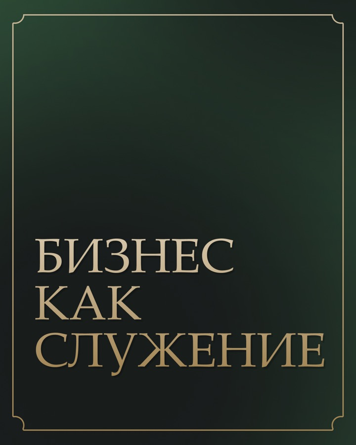
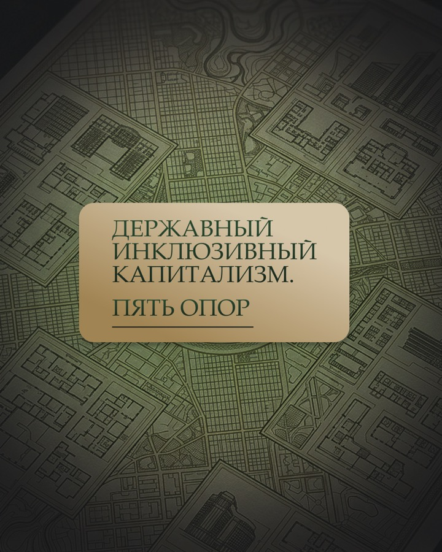
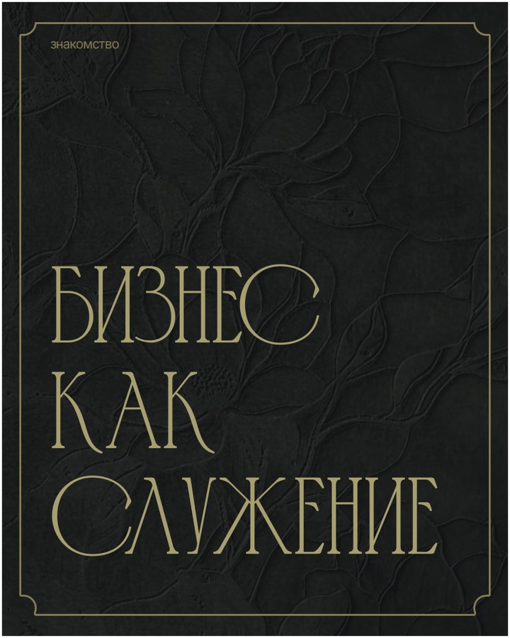
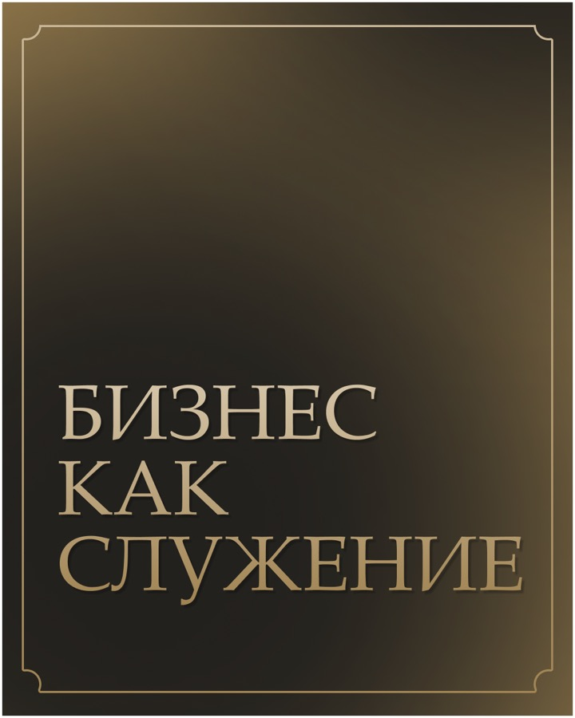
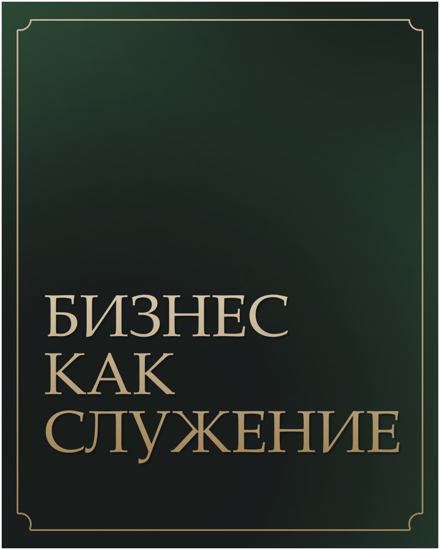

Dava Holding · бизнес и общественно-экономическая идеология
Как превратить сложную идею в понятный месяц контента
Первая версия плана не попала в задачу — и мы не стали её защищать. Полностью пересобрали концепцию вокруг одной идеи, разложили её на 10 последовательных публикаций и связали с мини-прогревом.
Приняты тексты и третья визуальная концепция. Готовый комплект содержит 10 публикаций и 5 сторис.
Черновики загружены во ВКонтакте; в кейсе показаны готовый комплект и подтверждённая часть календаря.


Маркетинговая пересборка
Не подправили пару тем — поменяли саму логику месяца
Первая версия ушла в юриспруденцию и не отражала задачу. После обратной связи фокус полностью перенесли на мировоззрение холдинга.
Что было не так
- темы рассказывали не о главной идее бренда;
- юридическая линия размывала позиционирование;
- сложные термины оставались без объяснения;
- публикации не складывались в один путь;
- история бренда и вовлечение не поддерживали друг друга.
Как пересобрали
Начали с ключевого принципа, затем объяснили пять опор, разобрали стереотипы, показали взгляд на труд, семью и технологии и завершили месяц общей формулой.
Логика: заявить принцип → объяснить модель → разобрать крайности → вовлечь → собрать смысл.
История бренда
Принцип, труд и третий путь.
Польза
Пять опор, общее благосостояние и технологии.
Разбор мифов
Нажива и социальная защита.
Вовлечение
Семья, экономика и итоговая формула.
Мини-прогрев
Сложный термин простыми шагами.
Визуальный выбор
Три концепции — одна утверждённая система
После обсуждения выбрали третью концепцию: светлее, ближе к сообществу, с фирменным тёмно-зелёным цветом и едиными плашками.



Выбранная третья концепция использована во всех 15 финальных материалах.
Готовый продукт целиком
План, все 10 постов и серия сторис
Показываем не только выбранную обложку: вся последовательность месяца и каждый экран прогрева доступны внутри страницы.
10 черновиков · 7 августа — 3 сентября
Раз в три дня в 10:00
В календаре ВКонтакте размещены 10 текстов и часть готовых визуалов.
- Бизнес как служениеОсновной принцип · история бренда
- Пять опор державного инклюзивного капитализмаОбъяснение модели · польза
- Нажива берёт или служение даётРазбор стереотипа
- Каждый гражданин — акционер общего богатстваОбъяснение идеи
- Труд должен позволять житьПозиция бренда
- Семья — базовая ячейка экономикиВовлечение
- Технология служит человекуПольза · цифровой суверенитет
- Не содержать, а страховатьРазбор мифа
- Не социализм и не либерализм: третий путьПозиционирование
- Человек — цель, а не средствоИтог месяца · вовлечение
Идеологические тезисы отражают позицию клиентского проекта, а не позицию lemonmedia.
10 публикаций
Единая тёмно-зелёная система
Веб-копии приведены к 720 × 900 без белой кромки исходного экспорта. Нажмите на любой пост, чтобы открыть его крупно.
Один мини-прогрев · 5 экранов
Объяснить сложный термин до основного поста
Серия начинает с вопроса, раскладывает модель на пять опор и ведёт к публикации №2.
Контроль публикации
Контент готов; показан подтверждённый этап загрузки
Тексты и часть готовых визуалов размещены во ВКонтакте как черновики.
Что сделали
- 10 текстов в календаре;
- 10 публикаций и 5 сторис в готовом комплекте;
- в календаре подтверждена часть готовых визуалов и историй;
- план, тексты и концепция №3 приняты;
- черновики распределены с 7 августа по 3 сентября.
Итог проекта
Кейс показывает принятые тексты, выбранную концепцию и 15 готовых материалов. Фактический выход и коммерческие показатели не измерялись.
Продолжение работы
Подтверждён повторный заказ
5 августа клиент заказал следующий месяц: 10 публикаций, включая 2 карусели.
Готовый первый месяц
10 постов, 5 сторис, три концепции, утверждённый финал и черновики во ВКонтакте.
Следующий месяц
Клиент оформил продолжение на 10 публикаций и 2 карусели.
У вас сложная идея?
Разложим её на месяц, который можно понять
10 постов с маркетинговым планом, текстами и дизайном — от 4 990 ₽.